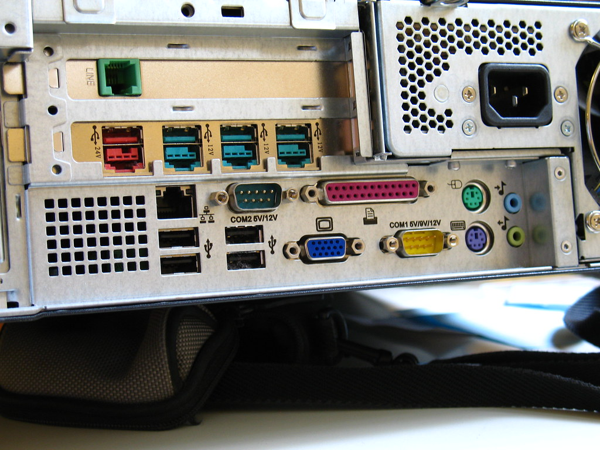
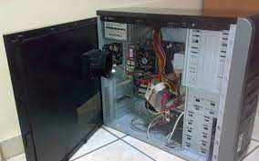
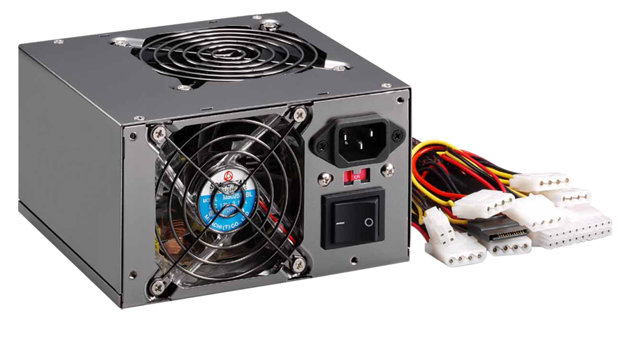
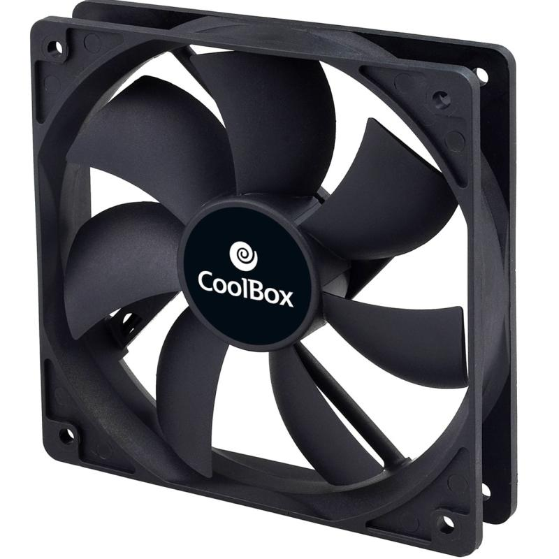
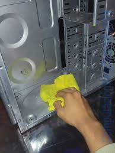
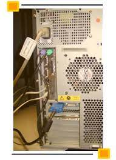
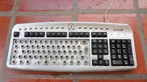
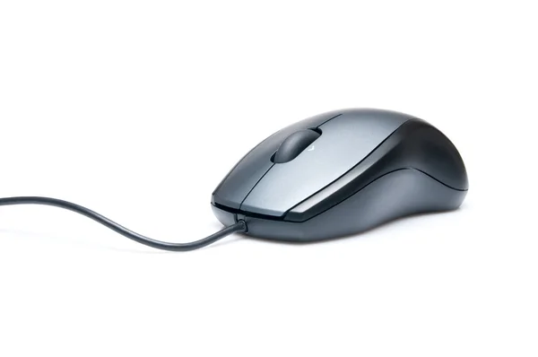

-Desconectar todos los conectores del cpu.

-Llevar el cpu al lugar del mantenimiento.
-Ponerce guantes.
-Sacar las tapas laterales del gabinete con ayuda de un destornillador.

-Ponerce guantes.
-Sacar las tapas laterales del gabinete con ayuda de un destornillador.
-Hacer uso del soplador para el polvo dentro del cpu.
-Desconectar los cables de la fuente de poder.
-Destornillar los tornillos que sostienen a la fuente de poder del gabinete.
-Sacar la fuente de poder y llevar a la area del soplador para quitar el polvo de la fuente de poder.

-Desconectar los cables de la fuente de poder.
-Destornillar los tornillos que sostienen a la fuente de poder del gabinete.
-Sacar la fuente de poder y llevar a la area del soplador para quitar el polvo de la fuente de poder.
-Sacar las tapas laterales de la fuente de poder y su rendija del ventilador con ayuda del destornillador.
-Limpiar el ventilador de la fuente de poder con cotonetes y alcohol isopropilico.
-Volver armar la fuente de poder.
-Sacar el ventilador auxiliar con ayuda del destornillador.

-Limpiar el ventilador de la fuente de poder con cotonetes y alcohol isopropilico.
-Volver armar la fuente de poder.
-Sacar el ventilador auxiliar con ayuda del destornillador.
-Limpiar con cotonetenetes y alcohol isopropilico.
-Proceder al ensamblaje del ventilador auxiliar y la fuente de poder.
-Conectar los cable de la fuente de poder a la placa madre a sus respectivos lugares.
-Limpiar el interior del gabinete con franela y alcohol isopropilico.

-Proceder al ensamblaje del ventilador auxiliar y la fuente de poder.
-Conectar los cable de la fuente de poder a la placa madre a sus respectivos lugares.
-Limpiar el interior del gabinete con franela y alcohol isopropilico.
-Proceder a poner las tapas laterales del gabinete con ayuda del destornillador.
-Limpiar el gabinete por fuera con franela y el alcohol isopropilico.
-Llevar el cpu a su lugar y conectar sus cables.

-Limpiar el gabinete por fuera con franela y el alcohol isopropilico.
-Llevar el cpu a su lugar y conectar sus cables.
-Proceder al limpiado del teclado,mouse y monitor.
-Para limpiar el teclado haremos uso de cotonestes, alcohol isopropilico y franela.
-Para limpiar el teclado haremos uso de cotonestes, alcohol isopropilico y franela.
-Para iniciar con la limpieza del teclado iniciaremos dandole unas palmaditas en el teclado para sacar cualquier basuara externa.
-Llevar el teclado a la zona del soplador y soplar de los lados laterales para sacar un poco de la basura interna.
-Empezar al desarmado de las teclas del teclado y la limpieza interna con cotonetes, franela y alcohol isopropilico.

-Llevar el teclado a la zona del soplador y soplar de los lados laterales para sacar un poco de la basura interna.
-Empezar al desarmado de las teclas del teclado y la limpieza interna con cotonetes, franela y alcohol isopropilico.
-Proceder con el armado de las teclas y conectar al cpu o gabinete y vereficar su funcionamiento.
-Para el limpiado del mouse haremos uso del alcohol isopropilico y algodon .
-Limpiar la lentilla y la parte de abajo del mouse con el algodon y alcohol isopropilico.

-Para el limpiado del mouse haremos uso del alcohol isopropilico y algodon .
-Limpiar la lentilla y la parte de abajo del mouse con el algodon y alcohol isopropilico.
-Y conectar el mouse en el cpu o gabinete y verificar su funcionamiento.
-Proceder al limpiado del monitor para ello necesitaremos liquido limpiador para monitor y franela.
-Mojar la franela y para solbre la pantalla de nuestro monitr de arriba hacia abajo.
-Limpiar de igual manera las partes del monitor con el liquido limpiador y franela.
-Proceder al limpiado del monitor para ello necesitaremos liquido limpiador para monitor y franela.
-Mojar la franela y para solbre la pantalla de nuestro monitr de arriba hacia abajo.
-Limpiar de igual manera las partes del monitor con el liquido limpiador y franela.

-Y conectar el monitor al cpu o gabinete.
-Finalizado el mantenimiento preventivo activo.
-Finalizado el mantenimiento preventivo activo.